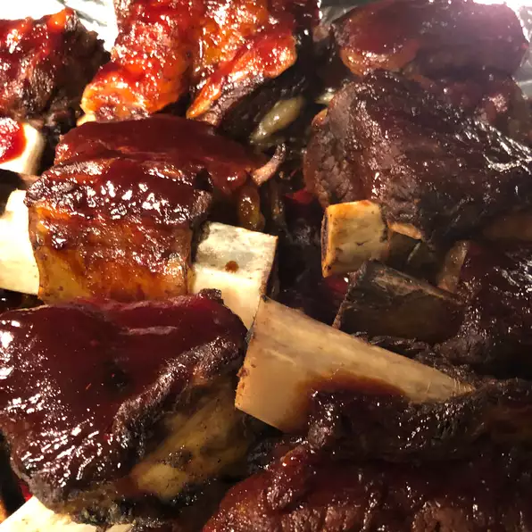

Braised Short Ribs

Ingredients
- 4 pounds boneless beef short ribs
- salt and pepper to taste
- ⅓ cup molasses
- ⅔ cup ketchup
- ¼ cup fresh lemon juice
- 1 tablespoon dry mustard
- ½ teaspoon chili powder
- ½ teaspoon garlic powder
Steps
-
Trim fat from rib meat. Sprinkle with salt and pepper to taste.
Place in a Dutch oven and cover with water. Simmer for 2 hours. Drain.
-
In a small bowl, combine the molasses, ketchup, lemon juice,
dry mustard, chili powder and garlic powder. Mix thoroughly.
-
Place the drained meat on a broiler rack. Brush molasses mixture over ribs.
Broil on medium for 10 to 15 minutes, turning and basting with sauce often.